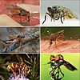

diptera

Has synonym(s): fly
Definition: Flies are insects of the order Diptera, the name being derived from the Greek δι- di- "two", and πτερόν pteron "wing". Insects of this order use only a single pair of wings to fly, the hindwings having evolved into advanced mechanosensory organs known as halteres, which act as high-speed sensors of rotational movement and allow dipterans to perform advanced aerobatics. Diptera is a large order containing an estimated 1,000,000 species including horse-flies, crane flies, hoverflies and others, although only about 125,000 species have been described.Flies have a mobile head, with a pair of large compound eyes, and mouthparts designed for piercing and sucking (mosquitoes, black flies and robber flies), or for lapping and sucking in the other groups. Their wing arrangement gives them great maneuverability in flight, and claws and pads on their feet enable them to cling to smooth surfaces. Flies undergo complete metamorphosis; the eggs are often laid on the larval food-source and the larvae, which lack true limbs, develop in a protected environment, often inside their food source. Other species like Metopia argyrocephala are ovoviviparous, opportunistically depositing hatched or hatching maggots instead of eggs on carrion, dung, decaying material, or open wounds of mammals. The pupa is a tough capsule from which the adult emerges when ready to do so; flies mostly have short lives as adults.
Source: Wikipedia
Wikipedia Page (Something wrong with this association? Let us know.)
Wikidata Page (Something wrong with this association? Let us know.)